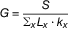
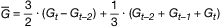
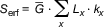

(Fundstelle: BGBl. I 2016, 792)
A. Tatsächlicher Grundkopfschaden eines Beobachtungsjahres- S
= abgegrenzter Schaden der Beobachtungseinheit im Beobachtungszeitraum abzüglich der Nettorisikozuschläge und einschließlich der geschlechtsunabhängig verteilten Leistungen wegen Schwangerschaft und Mutterschaft
- Lx
= abgegrenzter mittlerer Bestand der Beobachtungseinheit im Beobachtungszeitraum für das Alter x
- kx
= rechnungsmäßiger Profilwert für das Alter x
Tatsächlicher Grundkopfschaden:

Dabei wird über alle Alter x der Beobachtungseinheit summiert. Die Wirkungen von Wartezeit und Selektion sind ausreichend zu berücksichtigen.
B. Verfahren zur Berechnung der erforderlichen Versicherungsleistungen- t − 2, t − 1, t
= die letzten drei Beobachtungszeiträume
- Gt−2, Gt−1, Gt
= tatsächliche Grundkopfschäden gemäß Abschnitt A, umgerechnet auf das Leistungsversprechen, das zum Extrapolationszeitpunkt gültig sein wird, und unter Zugrundelegung der aktuellen rechnungsmäßigen Profile
Extrapolierter Grundkopfschaden:

Erforderliche Versicherungsleistungen:

mit Lx und kx gemäß Abschnitt A und Summation über alle Alter x.